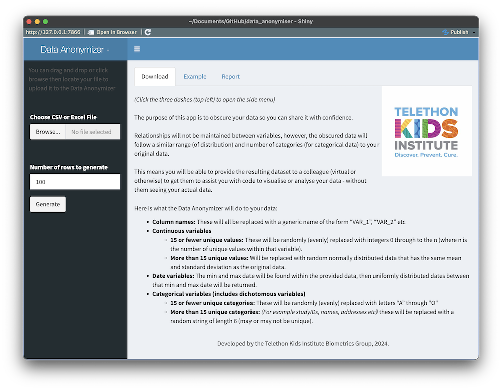

Overview
Data access and security is a really important topic and one that can be challenging to navigate. Research ethics and governance approvals typically require detail about where and how data will be stored and analysed - and a researcher typically does not have approval for the data they are working with to be moved to other locations.
The rapid emergence of AI tools and online data analytics platforms (e.g. dashboards) may tempt researchers with the promise of short cuts to writing code and/or producing attractive figures with ease. For example, sites like this that will take an uploaded dataset and draw a figure from it following a user prompt – but where did your precious private research data just go?
Below, we share a data anonymising (obscuring) shiny app that you can run on your local machine. It will return to you, a “similar” dataset to your original dataset, allowing you to then safely use an online chat bot to assisted you to code up that complex figure or model.
Data anonymising shiny app
The app is a shiny app, written in R. When loaded it looks like this:

The process
The app simply does the following:
- takes an uploaded dataset (.csv or .xlsx),
- lets you choose which variables to keep and how many rows you want returned,
- returns to you a fully obscured dataset (.csv) for download (see example above).
Contained on a tab within the app is a brief tabular report that compares your original data to the anonymised data.
Getting started
To use the app, you can either download a .zip (or clone the github repository) at the following link:
https://github.com/TelethonKids/data_anonymiser
Then:
- Unzip the folder
- In your R session, ensure you are in directory of the unzipped files
- In your R console, type
runApp()
You may need to install.packages() a few packages, though this app only leverages very popular packages that most R users are likely to already have.
Data obscuring process
This is also explained on the app’s landing page – but the detail of what is happening in the data obscuring process is as follows:
- Column names: These will all be replaced with a generic name of the form “VAR_1”, “VAR_2”, etc.
- Continuous variables
- 15 or fewer unique values: These will be randomly (evenly) replaced with integers 0 through to the n (where n is the number of unique values within that variable).
- More than 15 unique values: Will be replaced with random normally distributed data that has the same mean and standard deviation as the original data.
- Date variables: The min and max date will be found within the provided data, then uniformly distributed dates between that min and max date will be returned.
- Categorical variables (includes dichotomous variables)
- 15 or fewer unique categories: These will be randomly (evenly) replaced with letters “A” through “O”
- More than 15 unique categories: (E.g., studyIDs, names, addresses etc) these will be replaced with a random string of length 6 (may or may not be unique).
Closing notes
The app is by no means ground breaking or overly complex. The target audience is not likely the savvy analysis/coder, but perhaps you (the savvy analysis/coder) reading this might know of someone (or a research group) that could benefit from access to this. Or perhaps you could pursue/advocate for having this setup on an internal server (with no internet access) at your workplace for colleagues to use – as we have done at Telethon Kids.
Every day, we are entrusted with extremely personal data on our fellow human beings (de-identified or otherwise), so anything we do to limit potential data breaches is to be encouraged.
Acknowledgements
Thanks to Wesley Billingham and Zac Dempsey for providing feedback on and reviewing this post.
You can look forward to seeing posts from these other team members here in the coming weeks and months.
Reproducibility Information
Session information:
Code
sessionInfo()R version 4.3.3 (2024-02-29)
Platform: aarch64-apple-darwin20 (64-bit)
Running under: macOS Sonoma 14.4.1
Matrix products: default
BLAS: /Library/Frameworks/R.framework/Versions/4.3-arm64/Resources/lib/libRblas.0.dylib
LAPACK: /Library/Frameworks/R.framework/Versions/4.3-arm64/Resources/lib/libRlapack.dylib; LAPACK version 3.11.0
locale:
[1] en_US.UTF-8/en_US.UTF-8/en_US.UTF-8/C/en_US.UTF-8/en_US.UTF-8
time zone: Australia/Perth
tzcode source: internal
attached base packages:
[1] stats graphics grDevices utils datasets methods base
loaded via a namespace (and not attached):
[1] htmlwidgets_1.6.4 compiler_4.3.3 fastmap_1.2.0 cli_3.6.3
[5] tools_4.3.3 htmltools_0.5.8.1 rstudioapi_0.16.0 yaml_2.3.8
[9] rmarkdown_2.27 knitr_1.47 jsonlite_1.8.8 xfun_0.45
[13] digest_0.6.36 rlang_1.1.4 evaluate_0.24.0